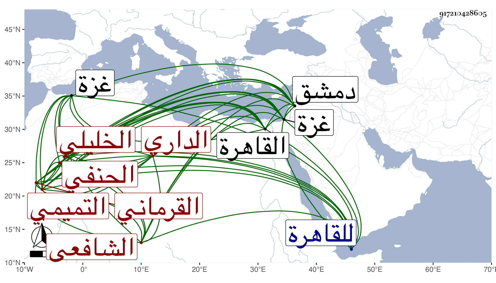

0902Sakhawi.DawLamic.ITO20230111-ara1.EIS1600.917210428605
Biography ID: 917210428605
279
عبد الرحمن بن علي بن اسحاق بن محمد بن حسن بن محمد بن عمر بن عبد العزيز بن مصلح زين الدين أبو الفرج التميمي الداري الخليلي الشافعي أخو أحمد وسبط البرهان إبراهيم بن يوسف بن محمود القرماني الحنفي الماضيين ويعرف بشقير . ولد في جمادى الأولى سنة ثلاث وقال لي مرة خمس وتسعين وسبعمائة ببلد الخليل ونشأ به فقرأ القرآن لأبي عمرو عند اسماعيل بن مروان وحفظ ألفية ابن مالك والمنهاج الفرعي وتفقه فيه بأبيه وبالشهاب بن قشلميش وقرأ في الفرائض والعربية على الشهاب بن الهائم قرأ عليه النفحة القدسية في الفرائض والسماط في النحو وكذا قرأ في الفقه والنحو على الشمس البصروي وقرأ على أبيه بحثا جميع تفسير البغوي كما أخبر به بل قال انه لبس الخرقة من الشهاب بن الناصح وانه سمع الصحيح على أبي الخير بن العلائي بقراءة القلقشندي وانه قرأه على جده لأمه وسمع كما وجد بخط القارئ وهو البرهان الحلبي على أبي حفص عمر بن النجم يعقوب البغدادي الهدمي من أوله إلى كذا بسماعه بأخباره وهو رجل صالح لجميع الصحيح مرتين الأولى في سنة ست وعشرين والثانية في التي بعدها علي الحجار بدمشق وكذا سمع علي ابن الجزري والتدمري وغيرهما وصحب الزين الخافي وتلقن منه الذكر واختلى عندهo ، وحج في سنة أربع وعشرين رفيقا للكمال بن الهمام وتردد للقاهرة كثيرا وولي مشيخة تدريس الحديث والتفسير عند السرداب ببلده وتعانى النظم وسهل عليه أمره وغالبه دون الوسط ونظم أسباب النزول للجعبري سماه مدد الرحمن في أسباب نزول القرآن والذخائر في الأشباه والنظائر وكأنه استمد فيه من كتابي ابن الجوزي وابن الزاغوني أو أحدهما وعدد ما لكل صحابي من الحديث سماه الاصابه فيما رواه السادة الصحابة واللمع للشيخ أبي اسحاق لم يكمل بل أفرد من نظمه ديوانا والتقط من الصحيحين مائة حديث وشرحها وعمل درر النفائس في ملح المجالس في التفسير على طريقة الوعظ افتتح كل مجلس منه بخطبة تناسبه ، وقد لقيته بغزة ثم بالقاهرة مرارا بل حضر عندي في الاملاء وحملت عنه أشياء وكان فاضلا طلق العبارة ذا فضل واستحضار في الجملة ولكن في كلامه تسامح وأخوه أشبه حالا منه وكان يقول انه رأى الخليل عليه السلام في المنام سبع عشرة مرة والنبي صلى الله عليه وسلم خمسا وعشرين مرة وانه مدح كلا منهما بعدة قصائد وانه أنجب أولادا كان منهم خمسة محمد وأبو بكر وعمر وعثمان وعلي ، وقد قال البقاعي رأيته انسانا حسنا تغلب عليه سلامة الفطرة وأثبت العماد بن جماعة في ترجمته سماعه البخاري علي ابن العلائي فأما أن يكون وقف على الطبقة أو نحوها أو اعتمد قوله وهو أقرب . مات يوم الجمعة سادس وقيل تاسع شعبان سنة ست وسبعين بالخليل ودفن بقبر أعده لنفسه بقطعة التوبة بالقرب من بركة السلطان عفا الله عنه ومما كتبته عنه قوله :
| الجسم مضني من بعادك بالي | وسوي حديثك لا يمر ببالي |
| والجفن مهمول ينقط أدمعا | مشكولة في شكلها شكوى لي |
في أبيات كتبتها مع غيرها في ترجمته من موضع آخر .
